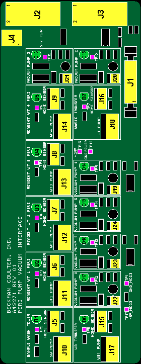
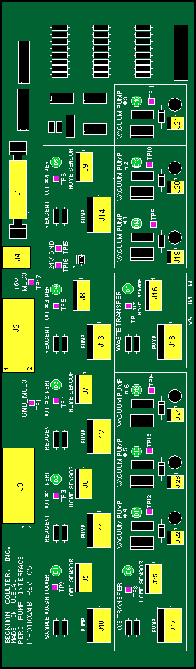
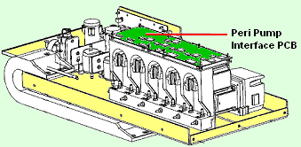

PCB - Interface - Peristaltic and Vacuum Pump
- Drawings.
- Details: Test Points, LEDs, Connector Overview, Connector Pin-outs.
- Schematics.
- Location.
Drawings


Details
- MCC Backplane PCB. (MCC3)
- Power Distribution PCB.
- Peri Pumps (7)
- Vacuum Pumps (4)
Test Points - PCB - Interface - Peristaltic & Vacuum Pump
LEDs - PCB - Interface - Peristaltic & Vacuum Pump
Conn. Overview - PCB - Interface - Peristaltic & Vacuum Pump
J1 - PCB - Interface - Peristaltic & Vacuum Pump
J2 - PCB - Interface - Peristaltic & Vacuum Pump
J3 - PCB - Interface - Peristaltic & Vacuum Pump
J4 - PCB - Interface - Peristaltic & Vacuum Pump
J5 - PCB - Interface - Peristaltic & Vacuum Pump
J6 - PCB - Interface - Peristaltic & Vacuum Pump
J7 - PCB - Interface - Peristaltic & Vacuum Pump
J8 - PCB - Interface - Peristaltic & Vacuum Pump
J9 - PCB - Interface - Peristaltic & Vacuum Pump
J10 - PCB - Interface - Peristaltic & Vacuum Pump
J11 - PCB - Interface - Peristaltic & Vacuum Pump
J12 - PCB - Interface - Peristaltic & Vacuum Pump
J13 - PCB - Interface - Peristaltic & Vacuum Pump
J14 - PCB - Interface - Peristaltic & Vacuum Pump
J15 - PCB - Interface - Peristaltic & Vacuum Pump
J16 - PCB - Interface - Peristaltic & Vacuum Pump
J17 - PCB - Interface - Peristaltic & Vacuum Pump
J18 - PCB - Interface - Peristaltic & Vacuum Pump
J19 - PCB - Interface - Peristaltic & Vacuum Pump
J20 - PCB - Interface - Peristaltic & Vacuum Pump
J21 - PCB - Interface - Peristaltic & Vacuum Pump
J22 - PCB - Interface - Peristaltic & Vacuum Pump
Schematics
- Connectors: J1 - J3, J6 - J18.
- Test Points: TP1 - TP8, TP17.
- 011024B-1.pdf
- Connectors: J1 - J3, J5 - J18.
- Test Points: TP1 - TP8, TP17.
- A42271-4.pdf
- Connectors: J4, J19 - J24.
- Test Points: TP9 - TP16.
- 011024B-2.pdf
- Connectors: J4, J19 - J24.
- Test Points: TP9 - TP16.
- A42271-3.pdf
Location
